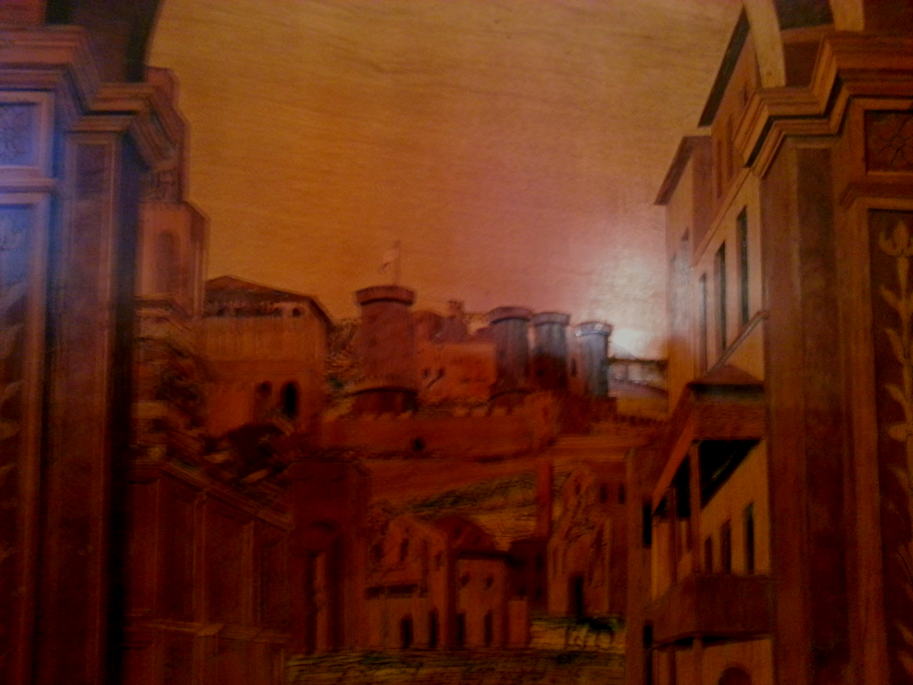

This chapter develops material originally presented in Christian Goursaud, ‘The Neapolitan Presentation Manuscripts of Tinctoris’s Music Theory: Valencia 835 and Bologna 2573’ (PhD dissertation, Birmingham City University, 2016; uk.bl.ethos.695288).
The treatises are Expositio manus (2r–14v), De natura et proprietate tonorum (16r–43r), De notis et pausis (44r–47v), De regulari valore notarum (47v–55r), De imperfectione notarum (55r–66v), De alternatione notarum (66v–70r), De punctis (70v–77r), De arte contrapuncti (79v–144r), and Proportionale musices (144v–163v).
Ronald Woodley, ‘The Dating and Provenance of Valencia 835: A Suggested Revision’, (December 2013, revised June 2014).
Marcelino Gutiérrez del Caño, Catálogo de los manuscritos existentes en la Biblioteca Universitaria de Valencia, 3 vols. (Valencia: Librería Maraguat, 1913), iii. 235.
See Tammaro De Marinis, La biblioteca napoletana dei re d’Aragona, 4 vols. (Milan: Hoepli, 1947–52); 2 suppl. vols., with Denise Bloch, Charles Astruc, Jacques Monfrin, and José Ruysschaert (Verona: Valdonega, 1969), ii. 164, plate B. De Marinis’s conclusion went unchallenged in Leeman L. Perkins and Howard Garey, eds., The Mellon Chansonnier, 2 vols. (New Haven: Yale University Press, 1979), i. 22; and Allan Atlas, Music at the Aragonese Court of Naples (New York: Cambridge University Press, 1985), 116.
Thomas Haffner, Die Bibliothek des Kardinals Giovanni d’Aragona (1456–1485): illuminierte Handschriften und Inkunabeln für einen humanistischen Bibliophilen zwischen Neapel und Rom (Wiesbaden: Dr L. Reichert Verlag, 1997), 315–19. For details of Giovanni’s biography, see Salvador Miranda, ‘Aragona, Giovanni d' (1456–1485)’ in The Cardinals of the Holy Roman Church (1998–).
Roßstirn refers to a late medieval armoured head covering for horses. See Heinrich Otte, Archäologisches Wörterbuch (Leipzig: T.O. Weigel, 1877), 202.
See Ronald Woodley, ‘Brussels, Bibliothèque Royale, MS II 4147: The Cultivation of Johannes Tinctoris as Music Theorist in the Nineteenth Century’, in Barbara Haggh and Frédéric Billiet, eds., Ars musica septentrionalis: De l’interprétation du patrimoine musical à l’historiographie, proceedings of the international conference of the Association Ad Fugam with the University of Paris-Sorbonne (Paris IV): Douai and Cambrai, 24–26 November 2005 (Paris: University of Paris-Sorbonne, 2011), 121–58; also available online at https://www.stoa.org/tinctoris/.
Woodley, ‘Dating and Provenance’. See also Haffner, Die Bibliothek, 315–19.
B-Br II 4147 includes the same nine treatises as V and BU, followed by the Diff. and the Comp. eff., though the latter text is incomplete due to later damage to the manuscript. It was not produced to the same standards as V and BU, featuring neither illumination nor elaborate painted initials, and was probably written by a northern European musician working with the royal chapel at Naples, rather than by any of the professional scribes of the court scriptorium.
Woodley, ‘Dating and Provenance’.
See Woodley, ‘Dating and Provenance’, Figure 5.
See Haffner, Die Bibliothek, 339–41.
The librarians of the Biblioteca Histórica very kindly supplied photographs of the verso and recto of fol. 2 of V using transmitted white light, in an attempt to document this phenomenon, but sadly these photographs demonstrate that physical manipulation is necessary to achieve the required angle of incidence in order to provide a stronger image of the shape of the hat, and so replication using still photography is difficult. It may be possible in the future to document this using videography.
It may be possible in future to employ multispectral imaging and Raman spectroscopy to make reliable identifications or distinctions between such specific pigments.
Colophon (fol. 428r): ‘Anno dominicae incarnationis | Mo.CCCCo.Lxxo. et viia. decembris. opus | hoc consumatum est: die autem ueneris | summo mane. Laus et glo|ria sit omnipotenti yhesu christo per infinita secula’; image available at https://www.bl.uk/catalogues/illuminatedmanuscripts/ILLUMINBig.ASP?size=big&IllID=21658. On the following verso is the ‘Omnium rerum’ scribe’s ‘signature’ ‘omnium rerum | vicissi|tudo | est’. There are twenty-four extant manuscripts with this motto written by the same scribe; see Albinia de la Mare, ‘The Florentine Scribes of Cardinal Giovanni of Aragon’, in Cesare Questa and Renato Raffaelli, eds., Il libro e il testo, atti del convegno internazionale, Urbino, 20–23 settembre 1982 (Urbino: Università delgi studi di Urbino, 1984), 245–93 at 262–3; and Albinia de la Mare, ‘New Research on Humanistic Scribes in Florence’, in Annarosa Garzelli, ed., Miniatura fiorentina del Rinascimento, 1440–1525: un primo censimento, 2 vols. (Florence: Giunta Regionale Toscana, 1985), i. 395–574 at 522. For a general descriptions of the manuscript, see Haffner, Die Bibliothek, 194–202; and ‘Harley 3485’, in British Library, Catalogue of Illuminated Manuscripts (n.d.).
On the inscription ‘cardenale’, see De la Mare, ‘Florentine Scribes’, 250.
See ‘Harley 3485’.
The presence of these traces was first noted in Haffner, Die Bibliothek, 195.
No precise colophon is transmitted in the secondary literature, and I have been unable to inspect this incunabulum. Gennaro Toscano suggests a printing date of c.1470 in ‘Les rois bibliophiles: enlumineurs à la cour d’Aragon à Naples (1442–1495); les manuscrits de la Bibliothèque nationale de Paris’ (PhD dissertation, Université de Paris IV-Sorbonne, 1992), 149, n. 43; and 445, no. 27. See also Haffner, Die Bibliothek, 309–10. De Marinis, Biblioteca napoletana, ii. 77, and Le Catalogue général de la Bibliothèque nationale de France (BnF) online at https://archivesetmanuscrits.bnf.fr/ark:/12148/cc66782.
De la Mare notes that this manuscript ‘is supposed to have been copied before 1478 for textual reasons’ (‘Florentine Scribes’, 274, no. 22). See also Haffner, Die Bibliothek, 310—12, who dates the frontispiece c.1472.
Haffner dates the dates the frontispiece c.1472 (Die Bibliothek, 284–6, no. 23 and plate 33). The manuscript was later bought by Johannes Sambucus for 8.5 ducats, ‘probably in Naples in 1562 or 3’ (De la Mare, ‘Florentine Scribes’, 275, no. 26). See also De Marinis, Biblioteca napoletana, ii. 151.
Haffner, Die Bibliothek, 224–7, no. 10. Images at http://gallica.bnf.fr/ark:/12148/btv1b8447068x.
See De Marinis, Biblioteca napoletana, suppl. vol. 2 (1969), 100, no. 38; Haffner, Die Bibliothek, 342–3, no. 1.; De La Mare, ‘Florentine Scribes’, 283, no. 59; and Le Catalogue général de la Bibliothèque nationale de France (BnF) online at https://catalogue.bnf.fr/ark:/12148/cb30242933g.
Two vols. in one with F-Pn Rés. E*. 14. Securely dated in colophon, after the first part of the text: ‘Hoc Conradus opus Suuenheym [sic.] ordine miro Arnoldusque simul Pannartz, una aede colendi, Gente theotonica, Rome expediere sodales. Anno Christi M.CCCC.LXXI, die vero XXVI mensis Aprilis, Rome in domo magnifici viri Petri de Maximo’, then later, after the second part of the text, M.CCCC.LXXI. die XX Septembris’, transcr. in Léopold Delisle, ‘Notes sur les anciennes impressions des classiques Latins et d’autres auteurs conservées au XVe siècle dans la Librairie Royale de Naples’, in Mélanges Graux: receuil de travaux d’érudition classique dedié a la mémoire de Charles Graux (Paris: Ernest Thorin, 1884), 245–96 at 262, no. 29. See also Haffner, Die Bibliothek, 343 and Le Catalogue général de la Bibliothèque nationale de France (BnF) online at https://catalogue.bnf.fr/ark:/12148/cb30242473b.
Dated in colophon at end of text: ‘Aspicis illustris lector quicunque libellos, | Si cupis artiticum nomina nosse, lege. | Aspersa ridebis cognomina teutona; forsan | mitiget ars musis inscia verba virum. | Conradus Suueynheym Arnoldus Pannartzque magistri | Rome impresserunt talia multa simul. | M.CCCC.LXXII, | die x Decembris.’, transcr. in Delisle, ‘Classiques Latins’, 190, no. 140. See also De La Mare, ‘Florentine Scribes’, 283, no. 64, who lists the print as having been made in Venice, and De Marinis, Biblioteca napoletana, suppl. vol. 1 (1969), 103, no. 140.
Dated in colophon (fol. 91v): ‘Expliciunt questiones domini Johannis de Janduno super | tres libros de anima Aristotarum. Impresse Venetiis per Franciscum de Hailbrun et Nicolaum de Franckfordia socios. | M.CCCC.LXXiii’. Images at https://gallica.bnf.fr/ark:/12148/bpt6k5403731v. See also Haffner, Die Bibliothek, 355–6, no. 9.
Two vols. in one. Colophon at end of vol. 2: ‘Hujus opera omnia, Medea excepta et triumpho Cae|saris et libello illo pontica lingua composito, quae | incuria temporum perierunt, Jacobus Rubens natione | gallicus honestissimo loco natus ad utilitatem viven|tium necnon et posterorum impressit. | Nicolao Marcello duce inclyto Venetiarum. | M CCCC LXXIIII.’, transcr. in Delisle, ‘Classiques Latins’, 281–2, nos. 104–5. See also Haffner, Die Bibliothek, 346–7, no. 4.
Colophon (fol. 268r): ‘Joannes Matheus Capritanus hoc opus scripsit’, quoted in De la Mare, ‘Florentine Scribes’, 273, no. 17. See also De Marinis, Biblioteca napoletana, ii. 16.
Dated in colophon at end of text: ‘Millesimo CCCC LXXVI, die xv | Maii, P. M. Sixti quarti, anno ejus | quinto, completum est hoc opus Rome’, transcr. in Delisle, ‘Classiques Latins’, 267, no. 47.
To these could, if found, be added E-Vasmr s.n., a lost manuscript of Cicero; see Haffner, Die Bibliothek, 276–7, no. 21.
Haffner, Die Bibliothek, 361. See also Marie Léontine Catherine Pellechet and Marie Louis Polain, Catalogue général des incunables des bibliothèques publiques de France, 3 vols. (Paris: A. Picard et fils, 1897–1909), ii. 346, no. 3234; and Denise Hillard, Catalogues régionaux des incunables des bibliothèques publiques de France, vi: Bibliothèque Mazarine (Paris: Aux Amateurs de Livres; Bordeaux: Société des Bibliophiles de Guyenne, 1989), 164, no. 566.
Dated in colophon (fol. 307v): ‘Beati Thome Aquinatis etiam hanc | primam secunde partis theologie sue | summe. item inclyti Joannis de Arago|nia: ferdinandi Sicilie regis filii: sancte | Romane ecclesie Cardinalis: sumptu liberalissimo: | Venceslaus Crispus Slagenverdiensis. | natione magis quam religione Bohemus: | exaratam absolvit. XVI. Kalendas Martiis. | Anno legis gratie Millesimo CCCC.LXXXIIII’; images at http://roderic.uv.es/uv_ms_0395. See Jean Destrez and Marie Dominique Chenu, ‘Une collection manuscrite des oeuvres complètes de S. Thomas d’Aquin par le roi Aragonais de Naples, 1480–1493’, Archivum fratrum praedicatorum, 23 (1953): 309–26, at 320–21; and Haffner, Die Bibliothek, 335–8, no. 43.
Colophon (fol. 172v): ‘SENECAE TRAGEDIAE. FINIS. | ANTONIUS SINIBALDUS | SCRIPSIT | PRO | Illustrissimo ac Reverendissimo Domino Domino Jo. de Aragonia Ferdinandi | Regis tertio Genito, Necnon tituli Sancti Hadryani Cardinali | Doctissimo. Suo perpetuo Domino et Benefactori gratissimo. | FLORENTIAE | ANNO CHRISTI | MCCCCLXXXIIII | IUNII | DIE | V); images at http://roderic.uv.es/uv_ms_0051. See also Haffner, Die Bibliothek, 247–50, no. 17.
Dated in colophon (fol. 338v): ‘Finis. Liber fratris bonvaventure super quarto sententiarum exit feliciter. Finis. Anno domini M.CCCC.LXXXIIII. et cetera.’, transcr. in Haffner, Die Bibliothek, 322. Frontispiece (fol. 1r) reprod. in ibid., plate 42.
Colophon (fol. 116v): ‘FINIS. ANTONIVS SINIBALDVS FLORENSINVS TRANCRIPSIT [sic!] PRO Illustrissimo ac Reverendissimo Io. de Aragonia tituli Sancti Hadryani Presbytero Cardinali Doctissimo Florentiae ANNO DOMINI NOSTRI IESU CHRISTI MDCCCCLXXXIIII.’, transcr. in Haffner, Die Bibliothek, 193. Frontispiece reprod. in Gennaro Toscano, La Biblioteca reale di Napoli al tempo della dinastia aragonese (Valencia: Generalitat Valencia, 1998), 615.
See De Marinis, Biblioteca napoletana, i. 66 and 91; and De la Mare, ‘Florentine Scribes’, 274.
Haffner, Die Bibliothek, 323–5, no. 37.
Frontispiece (fol. 2r) reprod. in Haffner, Die Bibliothek, plate 35. See also ibid., p. 289 on dating.
Table 8.1 includes manuscripts that can be shown to have been in the libraries of Giovanni, Alfonso, and those of King Ferrante I that feature the horse-head escutcheon. Owing to the relatively large amount of data, and in order to allow the table to be fully sortable, the year of preparation for each codex has been simplified through the omission of indications of ambiguity, e.g. c.1470 becomes 1470, while ranges such as 1470–80 are identified using the earliest year only. For more complete information on dating, see the main text of the present chapter where appropriate. For further information, see Goursaud, ‘Neapolitan Presentation Manuscripts’.
Reprod. in Haffner, Die Bibliothek, plate 39.
These fiocchi are described in Haffner, Die Bibliothek, 346, but the colour is not specified.
Woodley, ‘Dating and Provenance’.
See George L. Hersey, Alfonso II and the Artistic Renewal of Naples 1485–1495 (New Haven: Yale University Press, 1969), 109–10.
See also Toscano, Biblioteca reale, 251–76.
Woodley, ‘Dating and Provenance’.
That Crispus was the scribe of V was first suggested in Perkins and Garey, Mellon Chansonnier, i. 22. Crispus was probably from the fifteenth-century equivalent of modern-day Ostrov, in the Karlovarský kraj/Carlsbad region of the Czech Republic, and must have arrived in Naples at least by 1477. See Goursaud, ‘Neapolitan Presentation Manuscripts’, 150–66.
See Jan Peter Gumbert, ‘The Speed of Scribes’, in Emma Condello and Giuseppe De Gregorio, eds., Scribi e colofoni: le sottoscrizioni di copisti dalle origini all’avvento della stampa (Spoleto: Centro Italiano di Studi sull’Alto Medioevo, 1995), 57–69. See also Eef A. Overgaauw, ‘Fast or Slow, Professional or Monastic: The Writing Speed of some Late-Medieval Scribes’, Scriptorium, 49 (1995): 211–27.
The Drouot Aquinas Manuscript features as no. 22 in the 1508 inventory: ‘Sanctus Thomas super Johannem couvert de cuyr rouge, à ouvraige doré, guarny de deux fermaus de cuyvre’ (Jean Achille Deville, Comptes de dépenses de la construction du château de Gaillon, publiés d’après les registres manuscrits des trésoriers du cardinal d’Amboise par A. Deville (Paris: Imprimerie Nationale, 1850), 553). The codex left the Chateau de Gaillon for the monastery of Bourbon-lès-Gaillon after the end of the sixteenth century, before disappearing during the French Revolution and appearing during the nineteenth century in the collection of M. Bourdin at Rouen, then passing from his collection to that of Charles Lormier (1901, no. 16) (Haffner, Die Bibliothek, 332). It was sold as lot 48 in a sale at the Hôtel Drouot in Paris on 19 May 1976 (Antoine Ader, Jean-Louis Picard, Jacques Tajan, Claude Guérin, and Etienne Ader, Manuscrits du XIIe au XVIIIe siècle: Vente à Paris, Drouot Rive gauche, 19 mai 1976 (Paris: Claude Guérin, 1976), no. 48). The copy of the sale catalogue that was sent by a member of staff at the Bibliothèque nationale de France to Albinia de la Mare on 24 June 1976, and which subsequently entered the library of the Warburg Institute, features a pencil annotation that the manuscript was ‘bought by Schilter’, or ‘Schiller’, at that sale. Christopher De Hamel, in A History of Illuminated Manuscripts (London: Phaidon, 1986), 226–7, described it as being in a private collection in France. The manuscript’s precise current location is unknown. See also De Marinis, Biblioteca napoletana, ii. 161–2; and De la Mare, ‘Florentine Scribes’, 271, no. 8. Described in Haffner, Die Bibliothek, 331–332. On the Neapolitan Aquinas complex of manuscripts, see Goursaud, ‘Neapolitan Presentation Manuscripts’, 100–04.
For more on De Guerne, see Goursaud, ‘Neapolitan Presentation Manuscripts’, 155–7.
De la Mare, ‘Florentine Scribes’, 246.
Transcription in Haffner, Die Bibliothek, 332. Also transcribed in De La Mare, ‘Florentine Scribes’, 271, no. 8. See De Marinis, Biblioteca napoletana, ii. 161.
See Gaetano Moroni, Dizionario di erudizione storico-ecclesiastica da S. Pietro sino ai nostri giorni (Venice: Tipografica Emiliana, 1840), ii. 269; ‘Essai de liste générale des cardinaux. VII. Les cardinaux de la fin du XVe siècle’, in Annuario Pontificio (Vatican: Tipografia poliglotta vaticana, 1933), 155; and Miranda, ‘Aragona, Giovanni d' (1456–1485)’.
Miranda, ‘Aragona, Giovanni d' (1456–1485)’. Giovanni is recorded as having been in Naples in July 1485; see De la Mare, ‘Florentine Scribes’, 246; and De Marinis, Biblioteca napoletana, ii. 312, docs. 963 and 964.
See Ronald Woodley, ‘Tinctoris’s Italian Translation of the Golden Fleece Statutes: A Text and a (Possible) Context’, Early Music History, 8 (1988), 173–244; Ronald Woodley, ‘The Printing and Scope of Tinctoris’s Fragmentary Treatise De inventione et usu musice’, Early Music History, 5 (1985), 239–68 at 141–242; and Berthold Louis Ullmann, The Origin and Development of Humanistic Script (Rome: Edizioni di Storia e Letteratura, 1960), 126.
De Marinis, Biblioteca napoletana, i. 47.
‘Joannes Marcus clarissimi et virtute et nobilitate viri Petri Strozae Florentini discipulus Marcique Rotae magni viri equidem florentini amantissimus Parmae oriundus prestantissimo liberalitate viro domino Gherardo siculi regni Prothonotario benemerito in XX ac centum dies Juvante Deo Tranquille transcripsit. Panhormi anno salutis 1465 ultima Julij valeasque legis Marcique Rotae memineris obsecro’. See De Marinis, Biblioteca napoletana, i. 46.
De Marinis, Biblioteca napoletana, i. 47, no. 11. The Magnus manuscript is last recorded in the collection of C. W. Dyson Perrin in Davenham. See George F. Warner, Descriptive Catalogue of Illuminated Manuscripts in the Library of C. W. Dyson Perrin (Oxford: Oxford University Press, 1920), 189–190, plate lxxv; and De Marinis, Biblioteca napoletana, i. 50, no. 52, where the colophon is given as ‘Finisce lo tractato dell’arte del ben morire. Laus Deo. Amen. Joannes Marcus Cynicus Christi et honestatis famulus tribus et quinquaginta horis exscripsit’. See also Woodley, ‘Tinctoris’s Italian Translation’, 175–6, n. 8, where the manuscript is described as having thirty-six folios rather than the thirty-eight given by De Marinis.
See De Marinis, Biblioteca napoletana, i. 63. The standard unit of currency at Naples in the late fifteenth century was the ducat. One ducat equalled five tarì, and one tarì twenty grani. One grano was worth ‘1/600 of an ounce of gold’. The Neapolitan ducat was roughly equal to the Venetian, and to the Milanese and Florentine florin. By 1491, there was an increased discrepancy between gold ducats and those paid in money of account; the latter being worth fifteen per cent less than the former. See Atlas, Music at the Aragonese Court of Naples, p. x; and Eleni Sakellariou, Southern Italy in the Late Middle Ages: Demographic, Institutional and Economic Change in the Kingdom of Naples, c.1440–c.1530 (Leiden: Brill, 2012), 492–493.
De Marinis, Biblioteca napoletana, ii. 271, doc. 574.
De Marinis, Biblioteca napoletana, ii. 271, doc. 574.
De Marinis, Biblioteca napoletana, ii. 271, doc. 576.
It would be instructive in future research to make a physical examination of F-Pn lat. 2368 with reference to these records.
See Haffner, Die Bibliothek, 256–7; and ‘Duns Scotus, Johannes: In primum librum Sententiarum’, in Glasgow Incunabula Project, http://www.gla.ac.uk/services/incunabula/a-zofauthorsa-j/dunsscotusjohannesinprimumlibrumsententiarumvenice1477/#d.en.195010 (n.d.), Julie Gardham, ‘Book of the Month: John Duns Scotus, Quaestiones in quattuor libros Sententiarum’, http://special.lib.gla.ac.uk/exhibns/month/jan2008.html (2008).
Image online at https://www.gla.ac.uk/myglasgow/library/files/special/images/exhibitions/month/By23/by23_armsdetail.jpg
Woodley, ‘Dating and Provenance’.
Frontispiece of E-E T.II.5, reprod. in Toscano, Biblioteca reale di Napoli, 615.
See Adam Whittaker, ‘Musical Exemplarity in the Notational Treatises of Johannes Tinctoris (c. 1435–1511)’ (PhD dissertation, Birmingham City University, 2015; uk.bl.ethos.695295), 20–24.
‘Ea quoque profecto nunquam audio, nunquam considero quin letior ac doctior evadam.’ De contr. Prol.17 (JT:CTW).
Rob C. Wegman, ‘Johannes Tinctoris and the “New Art”’, Music & Letters, 84 (2003): 171–88 at 174. See also Leofranc Holford-Strevens, ‘Tinctoris on the Great Composers’, Plainsong and Medieval Music, 5 (1996): 193–9.
This manuscript is also linked with V through the stamps used on its binding; see Goursaud, ‘Neapolitan Presentation Manuscripts’, 56–7.
Ralph R. Bolgar, The Classical Heritage and its Beneficiaries (London: Cambridge University Press, 1973), 270.
The dedicatory distich appears at the head of the opening verso of the mass’s single surviving source, I-VEcap DCCLV, fol. 17v. See Johannes Tinctoris, Missa [secundi toni irregularis] in Johannes Tinctoris: Complete Practical Works, ed. Jeffrey J. Dean and Christian Goursaud (Forthcoming at http://www.earlymusictheory.org; hereafter JT:CPW). See also William Melin, ed., Johanni [sic.] Tinctoris Opera omnia (Corpus mensurabilis musicae, 18; n.p.: American Institute of Musicology, 1976), 1–32.
Giovanni Antonio Summonte, Historia della città e regno di Napoli 1601–43, iv (Naples: R. Gessari, 1748), 625; quoted in Hersey, Alfonso II and the Artistic Renewal of Naples, 27.
Hersey, Alfonso II and the Artistic Renewal of Naples, 27–8.
Repr. in Hersey, Alfonso II and the Artistic Renewal of Naples, fig. 28.
Toscano, ‘Les rois bibliophiles’, 300.
Fol. 11r, reprod. in Antonella Putaturo Murano, Miniature napoletane del rinascimento (Naples: Libreria scientifica editrice, 1973), plate xxiii.
Another consideration relating to Tinctoris’s appearance is a line in the first of Frater Fortunatus’s elogia, which relates that Tinctoris was ‘Belgian by birth, but in looks and language a Latin’ (Ronald Woodley, ‘The Proportionale musices of Iohannes Tinctoris: A Critical Edition, Translation and Study’ (DPhil dissertation, University of Oxford, 1982), i. 125). Woodley suggests this could possibly imply that ‘after his years in Naples he may have acquired a certain Mediterranean swarthiness of complexion, rather than that of a pale northerner, as well as local linguistic proficiency. Whether it means that Fortunatus also regarded his more general appearance as ‘Latin’, it is hard to say.’ (Personal communication, October 2015).
The Cedole di tesoreria, or the general records of the Aragonese treasury, detail expenditure relating to a wide variety of courtly activities, including the payment of scribes and illuminators. What survives of the Cedole is transcribed in Nicola Barone, ‘Le cedole di tesoreria dell’Archivio di Stato di Napoli dell’anno 1460 al 1504’, Archivio storico per le province napoletane, 9 (1884): 4–34, 205–48, 387–429, 601–37; 10 (1885): 5–47; and Anna Maria Compagna Perrone Capano, ed., Frammenti di cedole della Tesoreria (1438–74): Albarani della Tesoreria (1414–88), Testi e documenti di storia napoletana, Serie II, Fonti aragonesi, 10 (Naples: L’Accademia, 1979).
Quoted in Edmond vander Straeten, La musique aux Pays-Bas avant le XIX siècle, 4 vols. (Brussels: G. A. van Trigt, 1867–88; repr. New York: Dover Publications, 1969), iv. 28–30; and Ronald Woodley, ‘Iohannes Tinctoris: A Review of the Documentary Biographical Evidence’, Journal of the American Musicological Society, 34 (1981): 217–48 at 244–5. The document is now lost, and the text is replicated in neither Barone’s nor Capano’s excerpted transcriptions. Cloth at Naples was usually measured, as here, in terms of the canna (pl. canne), which was equal to eight palmi (sing. palmo) or approximately 2.1 metres.
Jacqueline Herald, in Renaissance Dress in Italy, 1400–1500 (London: Bell & Hyman, 1981), 224, asserts that the colour is that of the peahen, while Carole Collier Frick, in Dressing Renaissance Florence (Baltimore: John Hopkins University Press, 2002), 310; and Stella Mary Newton, in The Dress of the Venetians, 1495–1525 (Aldershot: Scolar Press, 1988), 18–21, both prefer the colour as that of the peacock. See also Carol M. Richardson, Reclaiming Rome: Cardinals in the Fifteenth Century (Leiden: Brill, 2009), 138.
Newton, Dress of the Venetians, 18–21.
Marin Sanudo, De origine, situ et magistratibus urbis Venetae ovvero la città di Venetia (1493–1530), ed. Angelo Caracciolo Arico (Milan: Cisalpino, La Goliardica, 1980), 58.
Lodovico Dolce, Dialogo dei colori (Lanciano: G. Carabba, 1913), 22–3. See Newton, Dress of the Venetians, 19.
Newton, Dress of the Venetians, 178.
Sanudo, De origine, 236. See also Newton, Dress of the Venetians, 20 and 158.
Herald, Renaissance Dress in Italy, 91.
Frick, Dressing Renaissance Florence, 305 and 310.
Herald, Renaissance Dress in Italy, 91.
Frick, Dressing Renaissance Florence, 310. See also Hidetoshi Hoshino, L’Arte della Lana in Firenze nel basso medioevo (Florence: L.S. Olschki, 1980), 251 and 286.
Philip Jacks and William Caferro, The Spinelli of Florence: Fortunes of a Renaissance Merchant Family (University Park, PA: Pennsylvania State University Press, 2001), 58. See also Richard Goldthwaite, The Building of Renaissance Florence: A Social and Economic History (Baltimore: John Hopkins University Press, 1980), 37.
There are some similarities between the appearance of Tinctoris’s robes on the frontispiece of V and those prescribed to be worn by members of King Ferrante’s knightly Order of the Ermine. See Goursaud, ‘Neapolitan Presentation Manuscripts’, 215–19.
De Marinis, Biblioteca napoletana, i. 150–55.
Perkins and Garey, Mellon Chansonnier, i. 22.
Perkins and Garey, Mellon Chansonnier, i. 22.
Woodley, ‘Proportionale’, 131.
See Gennaro Toscano, Biblioteca reale, 396–7 and 608–09; also Gennaro Toscano, ‘Nardo Rapicano’, in Milvia Bollati, ed., Dizionario biografico dei miniatori italiani (Milan: Bonnard, 2004), 896–9.
Toscano, ‘Nardo Rapicano’, 893–6.
The Neapolitan humanist Giuniano Maio (c.1435–93), like Tinctoris, acted as a tutor to King Ferrante’s children, and taught rhetoric at the studio in the city. De maiestate was dedicated to Ferrante, and was composed to offer guidance in statecraft to such men. Maio’s treatise was particularly concerned with ‘external behaviour as a reflection of inner virtue’. See Nicholas Webb, ‘Giuniano Maio’, in Cambridge Translations of Renaissance Philosophical Texts, ed. Jill Kraye, 2 vols. (Cambridge: Cambridge University Press, 1997), ii. 109.
Transcr. in De Marinis, Biblioteca napoletana, ii. 306. See also Barone, ‘Le cedole di tesoreria’, 10 (1885), 22–3.
Toscano, Biblioteca reale, 397.
De Marinis, Biblioteca napoletana, i. 150–55; later Perkins and Garey, Mellon Chansonnier, i. 22.
Toscano, Biblioteca reale, 396–7.
Toscano, ‘Nardo Rapicano’, 718.
See, for example, the depiction of the Castelnuovo in the Olivetan Giovanni da Verona’s early sixteenth-century intarsia panel in the sacristy of S. Anna dei Lombardi, Naples (Figure 8.51.Figure 8.51. Depiction of the Castelnuovo in the Olivetan Giovanni da Verona’s early sixteenth-century intarsia panel in the sacristy of S. Anna dei Lombardi, Naples. My own photograph (September 2012).).
See Riccardo Filangieri, Castel nuovo, reggia angioina ed aragonese di Napoli (Naples: L’Arte Tipografica, 1964), 49–50.
Toscano, Biblioteca reale, 397.
Toscano, ‘Les rois bibliophiles’, ii. 450, no. 31.
The splendid frontispiece, fol. 11r, of I-Nn I.B.57 is reproduced in Murano, Miniature napoletane, plate xxiii. The feature is also exhibited in Nardo’s execution of the figures in Maio’s De maiestate and the two manuscripts of Duns Scotus, F-Pn lat. 3063 and F-Pn lat. 3147.
Woodley, ‘Dating and Provenance’.
Felice was first proposed as having executed the initial decoration in V in Perkins and Garey, Mellon Chansonnier, i. 22–4, reporting work by Mirella Levi d’Ancona.
De Marinis, Biblioteca napoletana, ii. 300, doc. 847.
See De Marinis, Biblioteca napoletana, ii. 303, doc. 879.
Woodley, ‘Proportionale musices’, 136.
Mercedes López-Mayán, ‘Entre Roma y Nápoles: El pontifical a.I.7 del Escorial y la miniatura italiana del Renacimiento’, Rivista di storia della miniatura, 16 (2012): 110–120.
See Ludovic Lalanne, ‘Transport d’oeuvres d’art de Naples au château d’Amboise en 1495’, Archives de l’art francais, 2 (1852–3): 305–06.
‘Declaration des … livres en latin et en francais, italien, grec et esbrieu appartenant a la Royne Duchesse Anna di Bretagna’, 7 September 1498, transcribed in De Marinis, Biblioteca napoletana, i. 200, n. 8. Quoted in Paolo Cherchi and Teresa de Robertis, ‘Un inventario della biblioteca aragonese’, Italia medioevale e umanistica, 33 (1990): 109–347 at 109.
See Gennaro Toscano, ‘Rinascimento in Normandia: i codici della biblioteca napoletana dei re d’Aragona acquistati da Georges d’Amboise’, Chroniques italiennes, 29 (1992): 77–87.
Michael Edward Mallett and Christine Shaw, The Italian Wars, 1494–1559: War, State and Society in Early Modern Europe (Harlow: Pearson, 2012), 58.
William M. McMurry, ‘Ferdinand, Duke of Calabria, and the Estensi: A Relationship Honored in Music’, The Sixteenth Century Journal, 8 (1977): 17–30 at 20.
The account book is E-Mah 562B, fol. 4r. Del Tuffo’s name appears also on fols. 3v, 41v, 61r, and 68v. See Santiago López-Ríos, ‘A New Inventory of the Royal Aragonese Library of Naples’, Journal of the Warburg and Courtauld Institutes, 65 (2002): 201–43 at 202.
Beatrice arrived on the evening of Monday 16 March, 1501. See Albert de Berzeviczy, Béatrice, Reine de Hongrie (1457–1508), 2 vols. (Paris: Champion 1911–1912), i. 250–51.
McMurry, ‘Ferdinand, Duke of Calabria’, 20.
The document has not survived, but its existence is attested to ‘in a list of the possessions of the Aragonese dynasty of Naples, compiled in Ferrara on 10 May 1529’: ‘Lo inventario de tutti li libri del Re che restarno in poter de Joanne Antonio de Costanzo in ischa, receputo in lione a 28 de ottubro 1502’. See Giuseppe M. March, ‘Alcuni inventari di Casa d’Aragona compilati in Ferrara nel secolo XVI’, Archivio storico per le province napoletane, 60 (1935): 287–333 at 321; and López-Ríos, ‘A New Inventory’, 202.
McMurry, ‘Ferdinand, Duke of Calabria’, 20.
McMurry, ‘Ferdinand, Duke of Calabria’, 20.
McMurry, ‘Ferdinand, Duke of Calabria’, 21.
McMurry, ‘Ferdinand, Duke of Calabria’, 21.
The inventory is published in Jean Achille Deville, Comptes de dépenses de la construction du château de Gaillon, publiés d’après les registres manuscrits des trésoriers du cardinal d’Amboise par A. Deville (Paris: Imprimerie Nationale, 1850), 552–9. See also Gennaro Toscano, ‘Rinascimento in Normandia’, 77–87.
Deville, Comptes de dépenses, 559.
McMurry, ‘Ferdinand, Duke of Calabria’, 21.
López-Ríos, ‘A New Inventory’, 201.
McMurry, ‘Ferdinand, Duke of Calabria’, 21; and López-Ríos, ‘A New Inventory’, 204.
López-Ríos, ‘A New Inventory’, 201.
Letter of Isabella del Balzo to Francesco Gonzaga, January 1508, in Mantua, Archivio di Stato, Archivio Gonzaga, 803, fol. 54. Cited in López-Ríos, ‘A New Inventory’, 202.
McMurry, ‘Ferdinand, Duke of Calabria’, 23.
López-Ríos, ‘A New Inventory’, 201 and 209. Though López-Ríos’s article states that the inventory was ‘newly found’ in 2002, the Calcagnini sale was discussed, including the information about water damage in transit, in Toribio del Campillo, ‘El Cancionero de Pedro Marcuello’, in Homenaje á Menéndez y Pelayo en el año vigésimo de su profesorado, ed. Juan Valera, 2 vols. (Madrid: Librería General de Victoriano Suárez, 1899), i. 758.
López-Ríos, ‘A New Inventory’, 201 and 238.
Transcr. in López-Ríos, ‘A New Inventory’, 239–40.
López-Ríos, ‘A New Inventory’, 234.
On the establishment of Fernando and Germana’s court at Valencia, see Bernadette Nelson, ‘The Court of Don Fernando de Aragón, Duke of Calabria in Valencia, c.1526-c.1550: Music, Letters and the Meeting of Cultures, Early Music 32 (2004): 194–222.
Those books of the Neapolitan library that remained in Ferrara after the 1527 shipment were transferred to Valencia with Fernando’s sisters Isabella and Giulia in 1533, after the death of their mother. See López-Ríos, ‘A New Inventory’, 234; and Nelson, ‘The Court of Don Fernando de Aragón’, 196.
The document survives as E-VAu 947. The contents include chapel furniture and vestments (fols. 2r–14r); wall hangings, including thirteen satin and damask hangings bearing the Aragonese arms, bed linen and other decorative drapes in silk and other fine materials, cushions, tablecloths, cloaks and hats (fols. 16r–30r); jousting banners, flags, armour, chainmail, swords, spears, daggers, lances, maces, scimitars, etc. (fols. 30v–40v); tapestries and embroidered/historiated furniture coverings (fols. 41r–56r); carpets and rugs (fols. 57r–61v); books (fols. 62r–135r); horse saddlery, tack, and decorations (fols. 135v–153v), tablecloths, napkins, table decorations, combs, handkerchiefs, stoles, belts, etc. (fols. 154v–164v); fine cloth, hats, ruffs, drinking vessels, flasks, jewellery, perfumes, and sundry domestic devotional items (fols. 165r–184r); hunting horns (corni and cornetti), collars and harnesses for hunting dogs, falconry paraphernalia (fols. 184v–192v); miscellaneous items including medals (fols. 193r–194r); and porcelain (fols. 198r–217v). There are generally twelve to fourteen items per opening of the inventory, so there must be a total of at least 2,500 items in the inventory, which presumably would have necessitated the use of most of a ship’s hold for transportation.
‘The Scrivania di Razione was a body of magistrates in the Kingdom of Naples founded by the Spaniards, which compiled and conserved the payment books for soldiers and other civil servants and was also in charge of the fortifications.’ ‘The head magistrate in the central Naples office or in one of the provinces was thus known as Scrivano di Razione but he had his own staff made up of a restricted number of officials – up to 16 during the Aragonese period, fifteenth century – who were also named Scrivani di Ratione.’ See Riccardo Mussari and Bruno Mussari, ‘Bookkeeping in the Sixteenth-Century Building Yard of the Castello of Crotone: An Accountancy and Architectural Analysis’, Accounting History, 11 (2006): 319–55.
López-Ríos, ‘A New Inventory’, 202; and Cherchi and De Robertis, ‘Inventario’, 135. The 1501/02 Ischian inventory was in Ferrara until at least 1529, but is now lost.
Folio commune was one of the standard paper formats in use in Italy during the fifteenth century, and hence was used as an expression of size for parchment manuscripts. Other sizes include folio reale, a larger format that was used for the Neapolitan Aquinas series of manuscripts. Fol. 2 of V measures 272 × 190 mm.
Ronald Woodley has speculated about the existence of a companion volume to V, based on the wording of its index page. See ‘Proportionale’, 125; and ‘Printing and Scope’, 254.
That ‘sicut erat’ indicates the likelihood of the manuscript closing with a setting of the Magnificat was first suggested in Evan A. MacCarthy, ‘Tinctoris and the Neapolitan Eruditi’, Journal of the Alamire Foundation, 5 (2013): 41–67 at 62, n. 119.
MacCarthy, ‘Tinctoris and the Neapolitan Eruditi’, 62, n. 119. See also chapter 1 of the present collection, Jeffrey J. Dean, ‘Tinctoris’s Reading Practice: De inventione et usu musice and his Greek Authorities’, n. 79.
MacCarthy, ‘Tinctoris and the Neapolitan Eruditi’, 62, n. 119.
Nelson, ‘The Court of Don Fernando de Aragón’, 197–200.
See Roberta Freund Schwartz, ‘En busca de liberalidad: Music and Musicians in the Courts of the Spanish Nobility, 1470–1640’ (PhD dissertation, University of Illinois, 2001, 258–71.
See Schwartz, ‘En busca de liberalidad’, 288–92.
McMurry, ‘Ferdinand, Duke of Calabria’, 25; and Nelson, ‘The Court of Don Fernando de Aragón’, 201.
On the foundation of the monastery, see Nelson, ‘The Court of Don Fernando de Aragón’, 201–02; on the Order of the Ermine, see Goursaud, ‘Neapolitan Presentation Manuscripts’, 215–19.
Given as 1972 in María Isabel Álvaro Zamora, María Luz Mandingorra Llavata, and Donatella Giansante, Els vestits del saber: enquadernacions mudèjars a la Universitat de València (Valencia: Universitat de València, 2003), 146.
On the restoration project, see also María Cruz Cabeza Sánchez-Albornoz, La Biblioteca Universitaria de Valencia (Valencia: Universitat de València, 2000), 47, 144, and 148.
María del Pilar Gómez Gómez, ‘Restauración y encuadernación de los códices existentes en la Biblioteca de la Universidad’, unpublished letter to Caja de Ahorres y Monte de Piedad de Valencia, 22 February 1971.
I am grateful to Gonzalo Aguilar of Encuadernaciones Aguilar, for confirming that his company does not hold photographs or records of the manuscript.
{kind=link}
{kind=link}